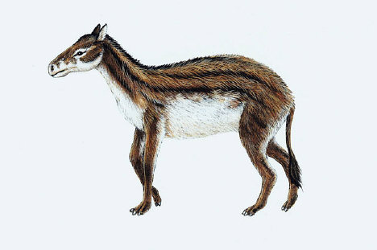
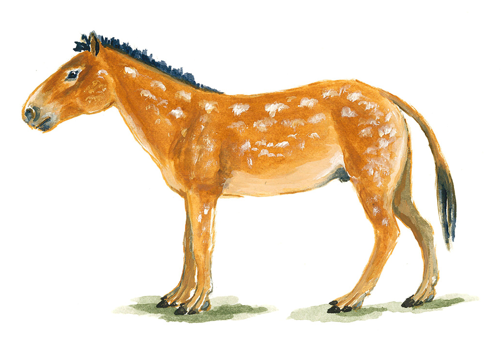
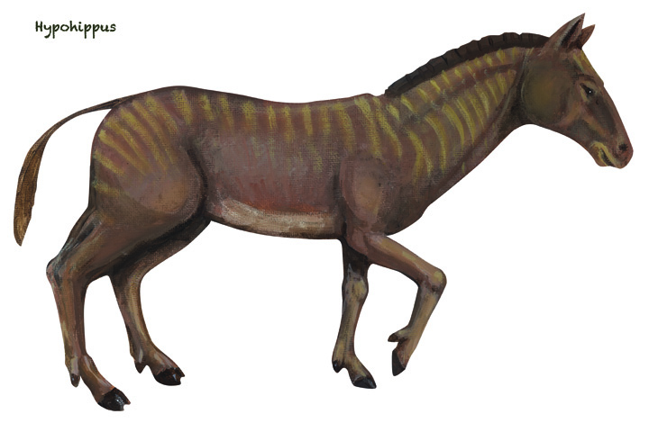
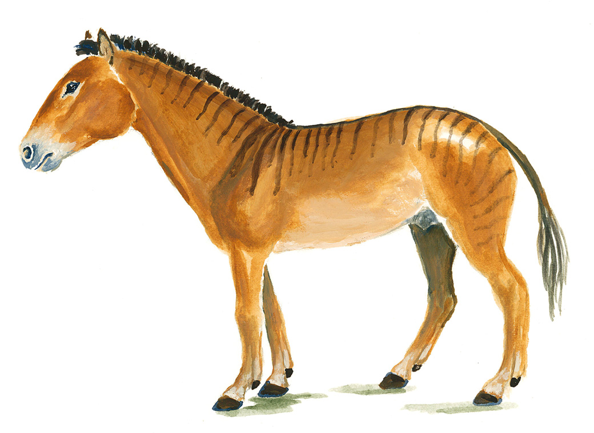
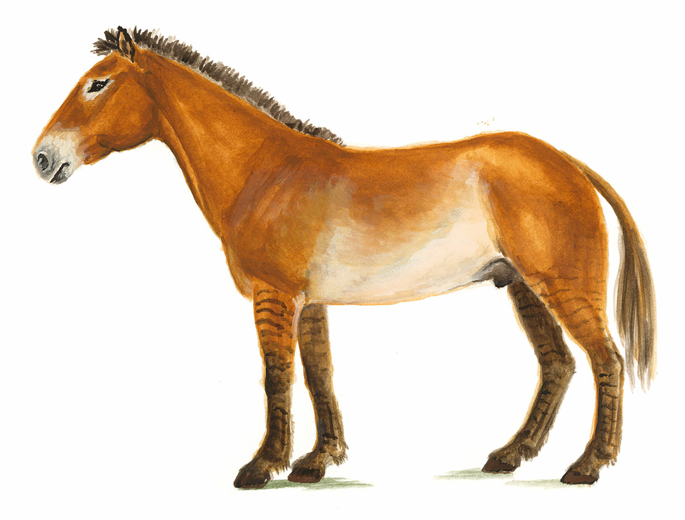

Animals of the Equidae family:
Jump to Hyracotherium/eohippus
Jump to Mesohippus
Jump to Hypohippus
Jump to Merychippus
- Hyracotherium/eohippusAlso the "dawn horse"

- A small dog-sized animal represents the oldest known horse.
It had a primitive short face, with eye sockets in the middle and a shorts diastema(the space between the front teeth and the cheek teeth).
Although it has low-crowned teeth, we see the beginning of the characteristic horse-like ridges on the molars.
Hyracotherium is better known as "eohippus"-which means "the dawn horse."
- Mesohippus Also the "middle horse"

-
Also called the "middle horse" is intermediate between the eohippus-like horses of the Eocence,(which don't look much like our familiar "horse") and more "modern" horses.
They were mostly found in Colorado and the Great Plains of the US and Canada.
The Mesohippus were believed to have lived about 37-32 million years ago.
They also had 3 toes.
- HypohippusAlso the "low horse"

- Hypohippus was a highly specialized browsing horse.
It's spreading 3 toes would have been well-adapted to the soft ground of the forest where it lived.
It was a large horse for it's time, with a size comparable to a modern pony.
They were found in Nebraska, Colorado, and Montana.
They also had three toes, had a long neck and face.
Hypohippus were believed to have like form 17-11 million years ago.
- Merychippus

- A milestone in the evolution of horses, though it retained the primitive character of 3 toes, it looked like the modern horse.
The Merychippus had a long face.
It's long legs allowed it to escape from predators and migrate long distances to feed.
It is the first known grazing horse and the ancestor of all later horses.
They are believed to have live between 17-11 million years ago.
- Dinohippus

- They are believed to be the closest relative to the Equus, the genus that includes the living horses, donkeys, and zebras.
They were believed to have lived from 13-5 million years ago.
There were a number of variation in the number of toes among individuals.
- Equus caballusModern horses

- The breeds all came for one of the following three-the Prewalski's horse, the tarpan, or the Ukrainian steppes.
In this line of thinking the Prewalski's horse and the tarpan formed the basic for the warm-blooded breeding and the Ukrainian gave rise to the cold-blooded breeds.
Equus caballus have one toe, long faces, and eyes on the side of their head to help them see almost fully around them.